TL; DR
Chemical mixtures are crucial to the chemical industry,
but predicting their properties is underexplored by the ML community.
We redefine the standards for chemical mixture property prediction.
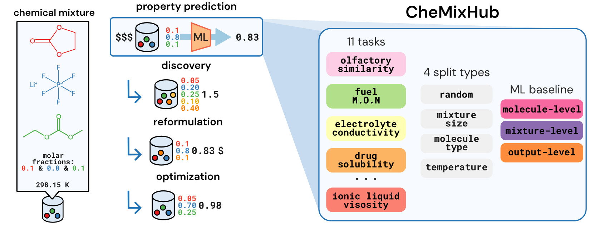
Key contributions:
• Consolidating and standardizing 11 tasks from 7 datasets (totalling ~500k data points), reflecting the
diversity and state of the chemical mixtures space.
• Introducing two new tasks from a new dataset, curated from the IlThermo database
(116,896 data points) and providing code to easily extend the curation to other target properties.
• Implementing four distinct data splitting methodologies to enable
robust assessment of model generalization capabilities under various realistic scenarios.
• Benchmarking representative ML models to set initial performance
levels and provide a comparative framework for future development.
Why we should look at chemical mixtures and their properties
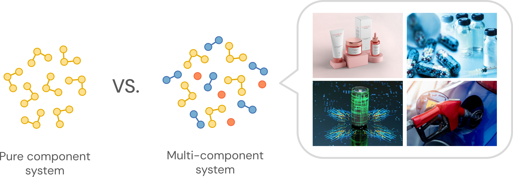
While we often focus on studying the properties of a single molecule or pure component systems, the chemical industry faces a more complex reality as nearly every chemical product used results from a mixture of chemicals. Indeed, chemical mixtures shape how drugs dissolve, how fuels ignite, and how electrolytes transport ions, influencing the performance of technologies all around us. Additionally to important downstream applications, developing predictive models for multi-molecular systems is crucial as the chemical mixture space combitorially explodes as the number of components in the mixtures grows, prohibiting exhaustive experimental exploration.
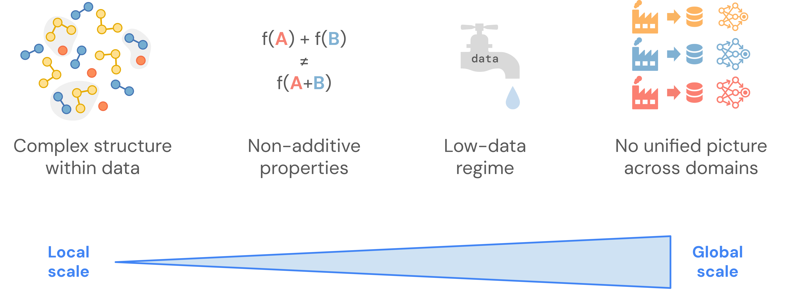
However, predicting properties of chemical mixtures is not straightforward. At the "local" (molecular) scale, complex intermolecular interactions between unlike molecules can be observed and lead chemical mixtures to exhibit non-additive properties. At the "global" scale, the combinatorial nature of the chemical mixture space condemns us to a low-data regime. On top of that, the ubiquitous aspect of chemical mixtures makes data standardization and benchmarking daunting, leading to having no unified modeling picture across application domains.
ChemixHub provides the unified, rigorous foundation needed to build predictive models that can tackle these challenges.
By creating a robust property prediction framework, CheMixHub enables systematic exploration of critical research questions,
including:
1. What modeling strategies, particularly those exploiting permutation invariance and hierarchical structure, are most effective for mixtures?
2. Can a general-purpose representation generalize effectively across multiple mixture tasks?
3. To what extent does incorporating physics-based constraints improve model performance, particularly in varying experimental contexts like temperature?
Datasets: from battery electrolytes to drug formulations
The first step was to select tasks that reflected the diversity and state of the chemical mixtures space, while applying the same standardization procedure for each task. We curated 11 regression tasks from 7 published datasets across the chemical mixture literature, which are summarized in the figure and the table below. The tasks were selected based on application domain and prior use as baselines in ML studies. If you want to contribute to enriching the data catalog of CheMixHub, please have a look at our GitHub repository or feel free to contact us!
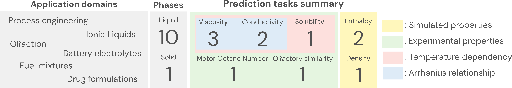
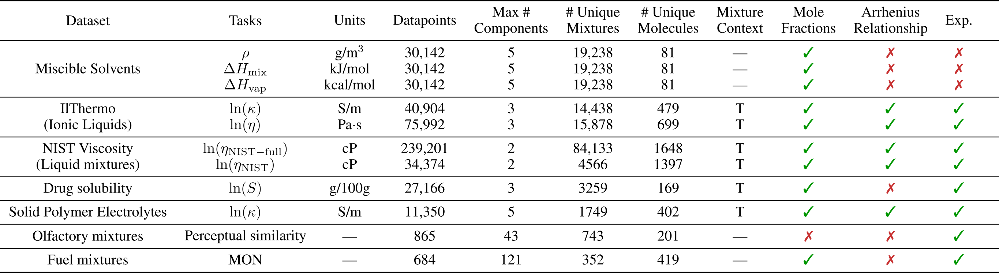
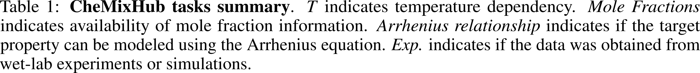
Check out the different datasets/tasks covered in CheMixHub!
Miscible Solvents (3 tasks)
Homogeneous solutions are important in a variety of material science
applications such as battery electrolytes, chemical reactivity, and consumer packaged goods.
IlThermo ionic liquids (2 tasks)
Ionic liquids (ILs) are salts composed of organic cations and organic or
inorganic anions that remain liquid at temperatures below 100 ◦C
NIST viscosity of liquid mixtures (2 tasks)
Dynamic viscosity is a key design objective for modern process engineering and products. However, modeling the viscosity of liquid mixtures presents significant challenges
due to the complex molecular interactions and the potential for nonmonotonic behavior
Drug solubility (1 task)
The drug solubility in mixture of solvents is a critical factor that influences various stages of the pharmaceutical development pipeline, from drug discovery, drug analysis to formulation design.
Solid polymer electrolytes conductivity (1 task)
Solid polymer electrolytes (SPEs), proposed as
potential replacements for conventional liquid organic electrolytes in batteries, have been engineered
to offer improved electrochemical stability and reduced flammability.
Olfactory mixture perceptual similarity (1 task)
Predicting the perceptual similarity of olfactory
mixture contributes to olfaction digitization efforts and also enables mixture reformulation (eg. creating perfumes with safer, cheaper and/or more sustainable ingredients that smell similar to an original version).
Fuel mixture Motor Octane Number (1 task)
The Motor Octane Number (MON) is a combustion-related property
commonly used to assess a fuel’s resistance to knocking.
Finally, we can conduct a rapid exploratory data analysis to estimate the diversity of chemical structures and the mixture compositions distribution in CheMixHub. On the left-hand side below, you can find a t-SNE visualization of the molecular structural diversity, with points colored by their source dataset. We can see that a wide range of chemical species is present, spanning salts and polymers. On the right-handside, we plotted a histogram showing the percentage of mixtures based on their number of components. We can see that open source datasets included in CheMixHub predominantly cover binary and ternary systems, with complex multi-component mixtures being underrepresented.
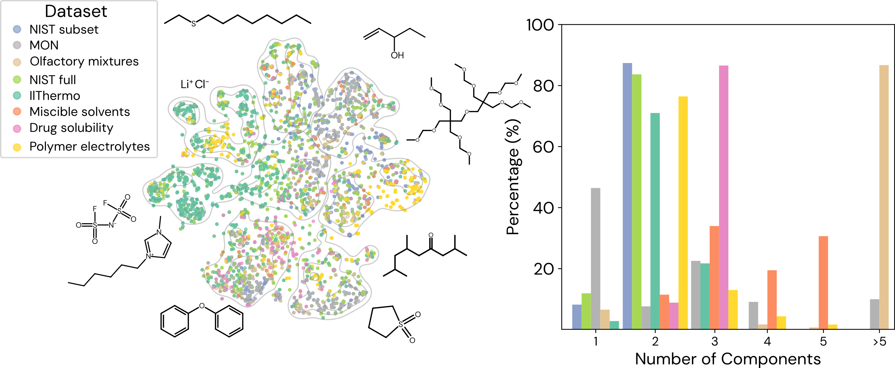
Unifiying the deep learning modeling landscape
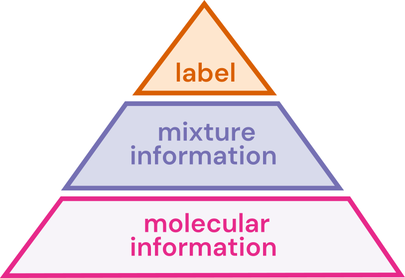
To guide model development, we define a structured modeling space that operates on input mixture data. Each data point comprises a set of pure component molecules, their associated molecular context (e.g., mole fractions), and the overall mixture context (e.g., temperature). This space, while focusing on foundational one-body and pairwise interactions and various aggregation operations, is non-exhaustive; future work could explore explicit N-body interactions or more sophisticated set-to-vector encoding mechanisms. Conceptually, this modeling space is divided into three levels: 1) molecular representation, 2) mixture representation, and 3) output generation.
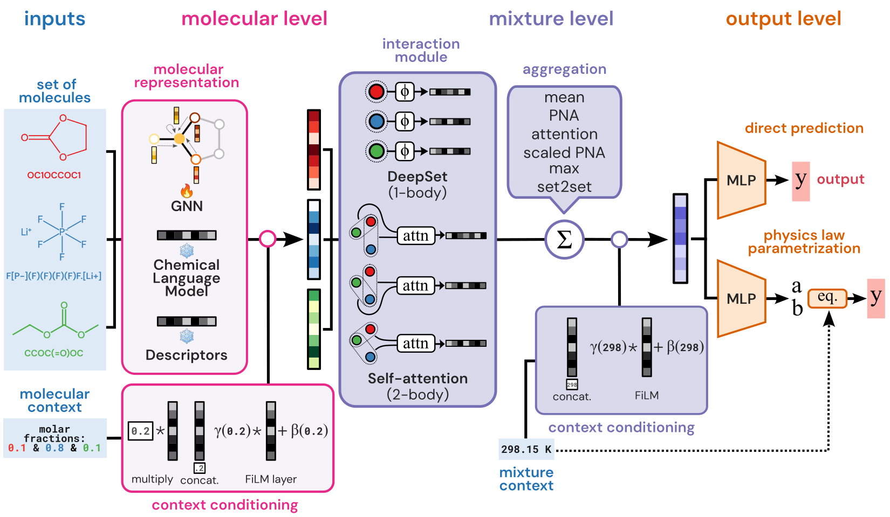
To establish a strong non-deep learning baseline, we provide comparison with XGBoost using RDKit descriptors or MolT5 embeddings molecular features. These features are linearly combined with their respective molecular context and then concatenated with the overall mixture context to form the input for XGBoost.
Modeling choices influence on performance over random splits
We investigate how the modeling choices impact the predictive power of models across the 11 tasks in CheMixHub over 5-fold random cross-validation (CV) splits and report results across mean absolute error (MAE). We select the best performing architectures that covers all combinations of molecular representation and mixture interaction modules (6 models) by a Bayesian optimization hyperparameter search along with two XGBoost baseline models. On the figure below, you can see the results of our investigation (the more left the better).
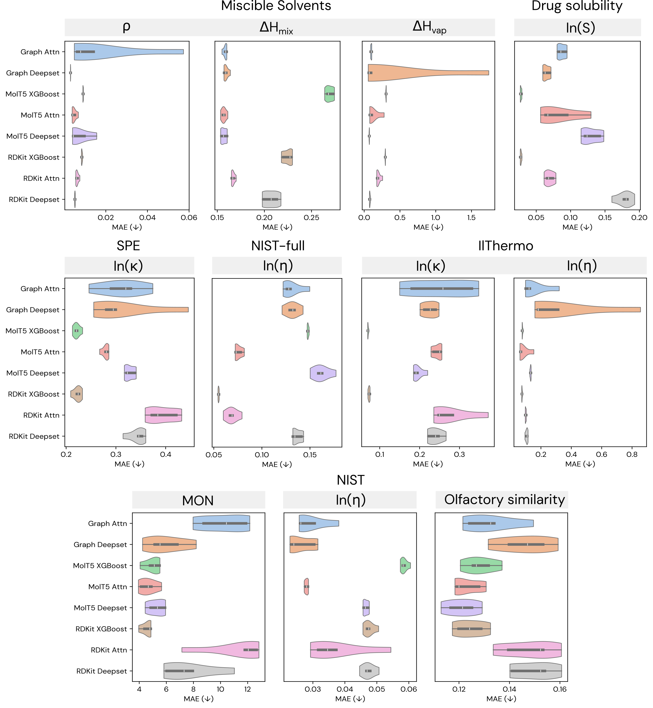
We observe that:
• Traditional tree-based methods like XGBoost are robust baselines on a great variety
of tasks (7 out of 11 tasks).
• XGBoost-based methods greatly struggle on predicting ∆Hmix and ∆Hvap,
two properties well known for their non-linear mixture behavior.
• Pre-trained representations of chemical language models like MolT5 tend to yield better performances across our dataset
compared to GNN-based representation and cheminformatics descriptors (7 out of 11 tasks).
• Regarding the choice of mixture interaction module, the need for higher level of
interactions tend to be task-dependent, with no consistent advantage of one method over the other.
How do models generalize to new mixture sizes and molecules?
We further study how robust models are to variation in the number of components in mixtures and to new molecular entities (leave molecule out (LMO) split). We focus on the datasets which have the greatest variation in terms of number of components, namely the Motor Octane Number and Olfactory mixtures perceptual similarity datasets. We assess the performance of the best deep learning-based model for each task as determined above and report it using the Pearson correlation coefficient ρ.
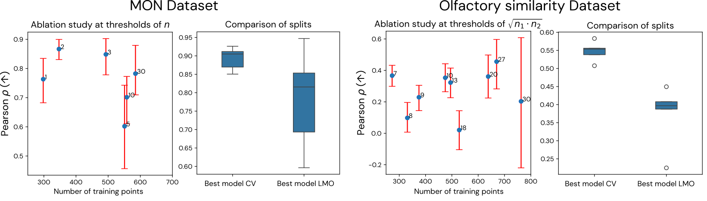
We observe that:
• Models are greatly sensitive to mixture sizes over both datasets.
• Adding new datapoints with slightly higher numbers of components
may be considered as noise by the model and therefore leads to overfitting.
• The performance of the models significantly decrease when considering new chemistries.
• This lack of extrapolative capabilities is expected as molecular level modeling plays an essential part in model
performance.
How does explicit physics-based modeling impact performance?
Previous work have reported that incorporating known physical or chemical constraints into ML models can improve accuracy and generalizability of model predictions. We investigate how swapping a regular fully connected predictive head for a “physics-based” predictive head impacts the model’s performance.
To do so, we modify the predictive head to output the coefficients of a physics law suitable for the task. For the scope of this paper, we limit our study to temperature-dependent tasks whose target property can be effectively modeled by the Arrhenius equation.
$$k = A \exp\!\left(-\frac{E_a}{RT}\right)$$
We assess the performance of the best deep learning model for each task based on random split performance and conduct the study on temperature-dependent splits to investigate generalizability to new temperature ranges. We also report the performance of XGBoost on this harder type of split.
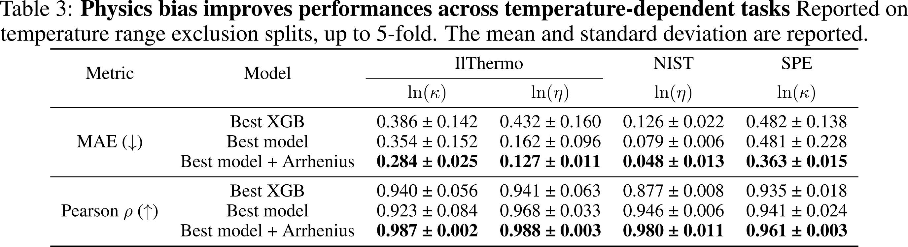
We observe that:
• Adding a physics bias via the Arrhenius equation greatly improves the performance
of deep learning architectures in this setting
• This technique also allows better interpretability of the predictive model, as it grounds it in known equations.
• The performance of XGBoost significantly decreases when evaluated on a harder split, highlighting the importance of
generalizability assessment with diverse splitting techniques.
Do models exhibit transfer learning capabilities?
We evaluate transfer learning capabilities of the best performing models on each of the 3 property prediction tasks (density ρ, ∆Hmix and ∆Hvap) of the Miscible Solvents dataset. For each task, we finetune the best models of the other two tasks and compare their performance to the original best model for this task based on random split performance.
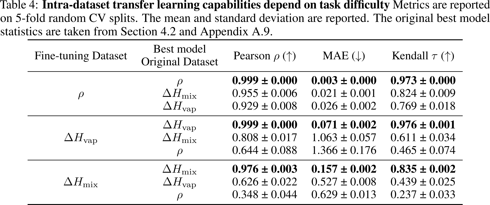
We observe that:
• Models initially trained to predict highly non-linear properties — harder tasks — ∆Hmix and ∆Hvap
perform really well when finetuned to predict density ρ.
• The model initially trained to predict density ρ fails at delivering good predictions of ∆Hmix and ∆Hvap.
Do models exhibit zero-shot capabilities?
We investigate the zero-shot capabilities of the best performing deep learning models, focusing on ln(η) viscosity prediction tasks and observe good zero shot capabilities for tasks that have similar viscosity value ranges.
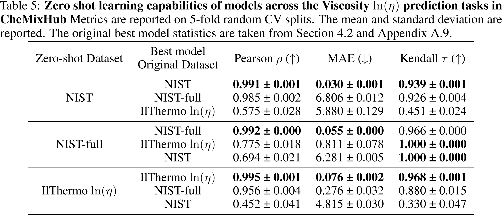
What's next for CheMixHub and molecular mixtures?
As mixture property data increasingly gets released and ML models for chemical science improve, we want CheMixHub to grow along. We provide a modular set-up to easily incorporate more prediction tasks and new modeling features and we are excited to see what it can bring to the community. Check out our GitHub repository to start benchmarking your own dataset and contribute to ChemixHub!
BibTeX
@article{rajaonson2025chemixhub,
title={CheMixHub: Datasets and Benchmarks for Chemical Mixture Property Prediction},
author={Rajaonson, Ella Miray and Kochi, Mahyar Rajabi and Mendoza, Luis Martin Mejia and Moosavi, Seyed Mohamad and Sanchez-Lengeling, Benjamin},
journal={arXiv preprint arXiv:2506.12231},
year={2025}
}